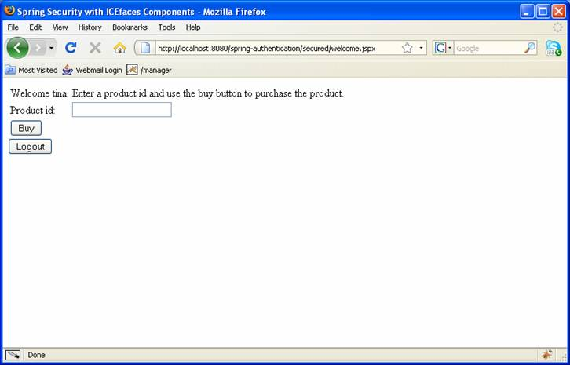
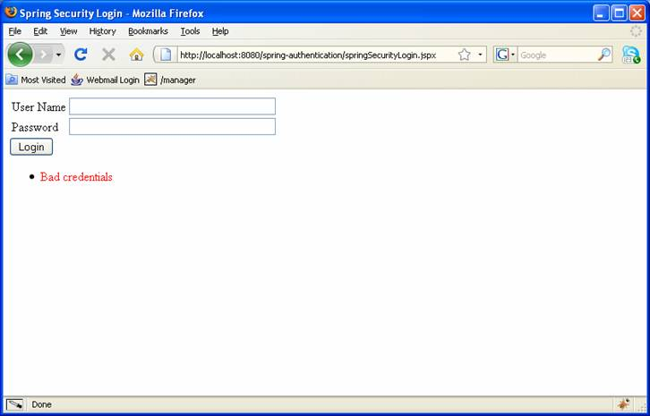
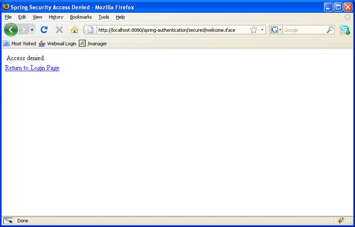
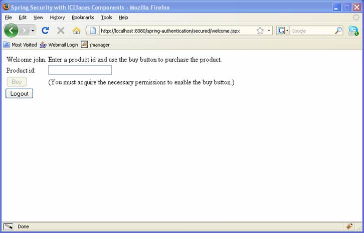

The ICEfaces Tutorial
Table of Contents
This tutorial will walk you through the process of using Spring Security for authentication of an ICEfaces/JSF web application. Additionally, Spring Security and ICEfaces components will be used to authorize access to different pages and functions in the application.
The application uses Spring Security 2.0 and ICEfaces. It is an adaptation/port of Seema Richard's code using Acegi and JSF. Initially, the application will present a login page to the user. If the user attempts to log in with the correct user name and password, the user will be redirected to a page where a purchase can be made. Spring Security will ensure the user ID has been authenticated and that the user's presence on the purchase page is authorized. The user can visit the purchase page if they have the role ROLE_URLACCESS. Making a purchase is a secure function, so the user will only have the "buy" button enabled if they have the role ROLE_ALLACCESS. This is accomplished using the ICEfaces' enabledOnUserRole attribute.
This tutorial will discuss the following topics related to Spring Security with ICEfaces:
The following jars are included in the application lib folder:
Although the spring.jar is included, knowledge of Spring is not required for basic authentication and authorization using Spring Security.
The following entries will be added to your existing ICEfaces application web.xml:
<listener-class>
org.springframework.web.context.ContextLoaderListener
</listener-class>
</listener>
<!-- Spring Security -->
<filter>
<filter-name>springSecurityFilterChain</filter-name>
<filter-class>
org.springframework.web.filter.DelegatingFilterProxy
</filter-class>
</filter>
<filter-mapping>
<filter-name>springSecurityFilterChain</filter-name>
<url-pattern>/*</url-pattern>
</filter-mapping>
The org.springframework.web.context.ContextLoaderListener will load the Spring application context when the application starts up. This allows us to access Spring-managed beans
Spring Security uses servlet filters for authentication and authorization. The appropriate filter fetches authentication request information such as username and password, and passes this information to Spring Security's authentication manager, which is configured as a Spring bean. The filter-mapping "/*" ensures all requests will be processed by Spring Security filters.
A Spring ApplicationContext is essentially a registry of application objects. Spring Security 2.0 has added a simplified namespace-based configuration syntax (security:) which substantially reduces the amount of xml in this file. For detail on how these tags work, please consult the Spring Security documentation.
<?xml version="1.0" encoding="UTF-8"?>
<beans xmlns="http://www.springframework.org/schema/beans"
xmlns:xsi="http://www.w3.org/2001/XMLSchema-instance"
xmlns:security="http://www.springframework.org/schema/security"
xsi:schemaLocation="http://www.springframework.org/schema/beans http://www.springframework.org/schema/beans/spring-beans-2.0.xsd
http://www.springframework.org/schema/security http://www.springframework.org/schema/security/spring-security-2.0.2.xsd">
<security:http auto-config="true" access-denied-page="/accessDenied.jspx">
<security:intercept-url pattern="/secured/**"
access="ROLE_ALLACCESS, ROLE_URLACCESS"/>
<security:form-login login-page="/springSecurityLogin.jspx"
default-target-url="/secured/welcome.jspx"/>
<security:logout logout-success-url="/logoutSuccess.jspx"/>
</security:http>
<security:authentication-provider user-service-ref="userDetailsService"/>
<bean id="userDetailsService"
class="com.icesoft.icefaces.security.UserDetailsServiceImpl">
<constructor-arg ref="userRepository"/>
</bean>
<bean id="userRepository"
class="com.icesoft.icefaces.security.UserDaoImpl"/>
</beans>
If you are familiar with previous versions of Spring Security, you can probably guess what's going on here. The <security:http> element is responsible for creating a FilterChainProxy and the filter beans which it uses. Common issues with acegi like incorrect filter ordering are no longer an issue as the filter positions are predefined.
The <security:intercept-url> element is used to define the set of URL patterns that the application is interested in and to configure how they should be handled. In this case, to view pages in our secured directory, a user will require ROLE_ALLACCESS or ROLE_URLACCESS.
The <security:form-login> element is used to add filters to provide authentication on demand. The login-page attribute specifies our login page. The default-target-url is the URL a user will be taken to after logging in.
The <security:form-logout> element adds a LogoutFilter to the filter stack. The logout-success-url is the URL a user will be taken to after logging out.
The <security:authentication-provider> element loads user information from a UserDetailsService and compares the username/password combination with the values supplied at login. UserDetails is a central interface in Spring Security and will be covered in our next topic.
The UserDetails Service represents a principal, but in an extensible and application-specific way. Think of UserDetails as the adapter between your own user database and what Spring Security needs inside the SecurityContextHolder. UserDetailsService is an interface with one method that accepts a String-based username argument and returns a UserDetails. Spring Security provides a number of UserDetailsService implementations, including one that uses an in-memory map and another that uses JDBC.
Most users tend to write their own though, with implementations often sitting on top of an existing Data Access Object (DAO) that represents employees, customers, or other users of the enterprise application. We have chosen this method, with our com.icesoft.icefaces.security.UserDetailsServiceImpl class implementing the UserDetailsService interface.
public class UserDetailsServiceImpl implements UserDetailsService {
private UserDao userDao;
public UserDetailsServiceImpl(UserDao userDao) {
this.userDao = userDao;
}
public UserDetails loadUserByUsername(String username)
throws UsernameNotFoundException, DataAccessException {
AppUser user = userDao.findUser(username);
if (user == null)
throw new UsernameNotFoundException("User not found: " + username);
else {
return makeUser(user);
}
}
private org.springframework.security.userdetails.User makeUser(AppUser user) {
return new org.springframework.security.userdetails.User(user.getLogin(), user
.getPassword(), true, true, true, true,
makeGrantedAuthorities(user));
}
private GrantedAuthority[] makeGrantedAuthorities(AppUser user) {
GrantedAuthority[] result = new GrantedAuthority[user.getRoles().size()];
int i = 0;
for (String role : user.getRoles()) {
result[i++] = new GrantedAuthorityImpl(role);
}
return result;
}
}
AppUser is the representation of a user in our bean logic. In a more sophisticated application you would likely add other properties such as first name, last name, email, etc.
public class AppUser implements Serializable {
private String login;
private String password;
private Set roles;
public AppUser() {
}
public AppUser(String login, String password, Set roles) {
this.login = login;
this.password = password;
this.roles = roles;
}
public String getLogin() {
return login;
}
public String getPassword() {
return password;
}
public Set getRoles() {
return roles;
}
}
We are not using a database, so our user data is stored in the UserDaoImpl class. Our entry in the applicationContect.xml ensures this class is injected into the UserDetailsServiceImpl constructor.
public class UserDaoImpl implements UserDao {
public AppUser findUser(String userName) {
AppUser appUser = null;
Set roles = new HashSet();
if (userName.equals("john")) {
roles.add("ROLE_URLACCESS");
appUser = new AppUser("john", "John", "Turner", "john", roles);
} else if (userName.equals("jim")) {
appUser = new AppUser("jim", "Jim", "Daniel", "jim", roles);
} else if (userName.equals("tina")) {
roles.add("ROLE_ALLACCESS");
appUser = new AppUser("tina", "Tina", "Joseph", "tina", roles);
}
return appUser;
}
}
We have three users with the following username/password/roles:
A user enters our JSF/ICEfaces application via index.jsp.
<%
response.sendRedirect("/spring-authentication/secured/welcome.iface");
%>
This redirects us to a URL that requires ROLE_ALLACCESS or ROLE_URLACCESS as we have stated in our applicationContext.xml. Spring security does not have an authenticated user so, we will be taken to the login-page specified in the applicationContext.xml - springSecurityLogin.jspx.
<?xml version="1.0" encoding="ISO-8859-1" ?>
<f:view xmlns:f="http://java.sun.com/jsf/core"
xmlns:h="http://java.sun.com/jsf/html"
xmlns:ice="http://www.icesoft.com/icefaces/component">
<ice:outputDeclaration doctypeRoot="HTML"
doctypePublic="-//W3C//DTD HTML 4.01 Transitional//EN"
doctypeSystem="http://www.w3.org/TR/html4/loose.dtd"/>
<html>
<head>
<title>Spring Security Login</title>
</head>
<body>
<ice:form partialSubmit="false">
<ice:panelGrid columns="2">
<ice:outputLabel value="User Name" for="j_username"/>
<ice:inputText id="j_username"
value="#{loginBean.userId}" size="40"
maxlength="80"/>
<ice:outputLabel value="Password" for="j_password"/>
<ice:inputSecret id="j_password"
value="#{loginBean.password}" size="40"
maxlength="80"/>
</ice:panelGrid>
<ice:commandButton actionListener="#{loginBean.login}" value="Login"/>
<ice:messages style="color: red;"/>
</ice:form>
</body>
</html>
</f:view>
This page uses ICEfaces components to take username and password inputs and then submits them for login via the ice:commandButton actionListener binding. All the bindings are to our JSF request scope managed-bean, LoginBean:
public class LoginBean {
// properties
private String userId;
private String password;
/**
* default empty constructor
*/
public LoginBean() {
Exception ex = (Exception) FacesContext
.getCurrentInstance()
.getExternalContext()
.getSessionMap()
.get(AbstractProcessingFilter.SPRING_SECURITY_LAST_EXCEPTION_KEY);
if (ex != null)
FacesContext.getCurrentInstance().addMessage(
null,
new FacesMessage(FacesMessage.SEVERITY_ERROR, ex
.getMessage(), ex.getMessage()));
}
public String getPassword() {
return password;
}
public void setPassword(String password) {
this.password = password;
}
public String getUserId() {
return userId;
}
public void setUserId(String userId) {
this.userId = userId;
}
public void login(ActionEvent e) throws java.io.IOException {
FacesContext.getCurrentInstance().getExternalContext().redirect("/spring-authentication/j_spring_security_check?j_username=" + userId + "&j_password=" + password);
}
}
In Spring Security, HTTP Form Authentication involves using the AuthenticationProcessingFilter to process a login form. This is the most common way for an application to authenticate end users. The LoginBean will send j_username and j_password input fields to a URL that is monitored by the filter (by default /j_spring_security_check). There are three possible outcomes here: success (authentication and authorization), access denied based on credentials (failed authentication), access denied based on roles (successful authentication, failed authorization).
Users that have ROLE_URLACCESS or ROLE_ALLACCESS are authorized to view the welcome.jspx page in the secure folder. Once they are successfully authenticated, Spring Security will send them to their original destination (the page specified by default-target-url in the application.xml). Log in as "tina" and you should see the following:
This snippet of code from our LoginBean will catch exceptions thrown by Spring Security so that we can display them in our JSF page via the ice:messages tag. If you enter invalid credentials, the Spring Security exception will be displayed on the page as follows.
Exception ex = (Exception) FacesContext
.getCurrentInstance()
.getExternalContext()
.getSessionMap()
.get(AbstractProcessingFilter.SPRING_SECURITY_LAST_EXCEPTION_KEY);
if (ex != null)
FacesContext.getCurrentInstance().addMessage(
null,
new FacesMessage(FacesMessage.SEVERITY_ERROR, ex
.getMessage(), ex.getMessage()));
<ice:messages style="color: red;"/>

The attribute access-denied-page="/accessDenied.jspx" specifies the page that is presented to a user when their credentials fail authorization. If you log in as "jim", you will successfully pass authentication, but "jim" does not have an assigned role. Because the welcome.jspx page requires either ROLE_URLACCESS or ROLE_ALLACCESS jim will be sent to the accessDenied page.
We have covered "tina" who has ROLE_ALLACCESS and "jim" who does not have an assigned role. Our final user is "john" who has ROLE_URLACCESS. This role grants access to pages in the secure folder, but users with this role should not be able to purchase products. To prevent a purchase we will simply use ICEfaces' enabledOnUserRole attribute on the ice:commandButton component to disable the button and we will use the renderedOnUserRole attribute on an ice:outputText component to render a message to the user.
Selected elements on a page can be completely added or removed with the renderedOnUserRole attribute. Interactive elements can be enabled or disabled with the enabledOnUserRole attribute.
<html xmlns:jsp="http://java.sun.com/JSP/Page"
xmlns:h="http://java.sun.com/jsf/html"
xmlns:f="http://java.sun.com/jsf/core" version="2.0"
xmlns:ice="http://www.icesoft.com/icefaces/component">
<head>
<title>Spring Security with ICEfaces Components</title>
</head>
<body>
<f:view>
<ice:form id="form">
<ice:panelGrid id="grid" columns="2">
<ice:outputText
value="Welcome #{sessionScope.SPRING_SECURITY_LAST_USERNAME}."/>
<ice:outputText
value="Enter a product id and use the buy button to purchase a product."/>
<ice:outputLabel for="input1" value="Product id:"/>
<ice:panelGroup>
<ice:inputText id="input1" value="#{shoppingBean.productId}"
required="true"/>
<ice:message for="input1"/>
</ice:panelGroup>
<ice:commandButton id="button1" value="Buy"
action="#{shoppingBean.send}"
enabledOnUserRole="ROLE_ALLACCESS"/>
<ice:outputText renderedOnUserRole="ROLE_URLACCESS"
value="(You must acquire the necessary permissions to enable the buy button.)"/>
</ice:panelGrid>
<ice:commandButton actionListener="#{shoppingBean.logout}"
value="Logout" immediate="true"/>
</ice:form>
</f:view>
</body>
</html>

This concludes the tutorial. You may view the source code by following the links below.
| Example | Source | Notes |
| spring-security-basic | spring-security-basic source code | Spring Security form-login using ICEfaces enabledOnUserRole/renderedOnUserRole attribute. |
Copyright 2009 ICEsoft Technologies Inc. All rights reserved.